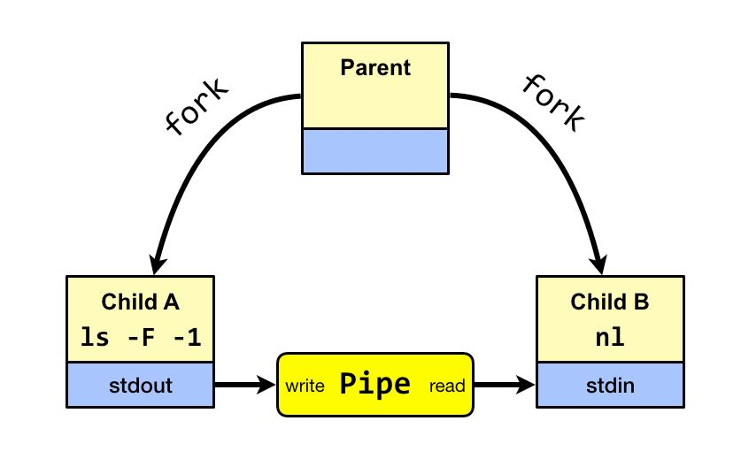
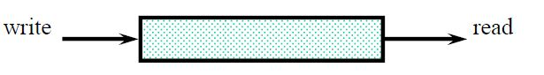
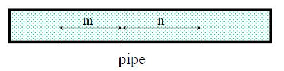
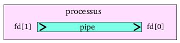
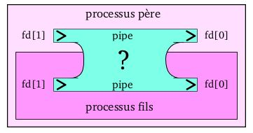
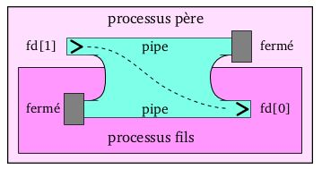

Programmation Système - Pipes⚓︎
Définition⚓︎
Les pipes sont des objets permettant l’échange de données entre processus sur une même machine.
Les pipes sont bien connus dans le monde d'Unix. En effet, ils permettent de faire communiquer deux processus entre eux.
Ils sont représentés par le caractère |.
On les utilisent courrament dans les terminaux pour rediriger la sortie d'une commande vers l'entré d'une autre commande, par exemple : ""ls | wc"".
Mais nous avons les mêmes possibilités dans un programme en langage C, ou ces pipes seront gérés comme des fichiers.
Les lectures/écritures dans un pipe se font avec les fonctions read() et write() classiques.
Il existe deux types de pipes en C :
- Anonymes
- Nommés

Echanges⚓︎
Chronologiques⚓︎
Les échanges se font de manière chronologique, en FIFO : les données lues sont celles écrites depuis le plus longtemps.

Les lectures sont destructrices !
Atomiques⚓︎
Les échanges se font de manière atomique : si 2 tâches écrivent dans un même pipe respectivement m et n octets en "même temps" ces octets restent disjoints.

Synchronisés⚓︎
Les échanges se font de manière synchronisés :
- une tâche qui veut lire dans un pipe vide est suspendue jusqu’à l’écriture d’octets
- une tâche qui veut ouvrir en lecture un pipe qui n’est pas déjà ouvert en écriture est suspendue
- une tâche qui veut ouvrir en écriture un pipe qui n’est pas déjà ouvert en lecture est suspendue
- une tâche qui veut lire dans un pipe vide qui n’est plus ouvert en écriture reçoit le compte-rendu "fin de fichier"
Pipe dans un processus unique⚓︎
Créer un pipe dans un processus unique n'a pas beaucoup d'interêt mais cela nous permet de comprendre ce qui caractérise un pipe :
Un pipe possède deux extremités.
Il n'est possible de faire passer des informations que dans un sens unique.
On peut donc écrire des informations à l'entré et en lire à la sortie.
Les deux extrémités sont référencés par des descripteurs de fichiers (des entiers stockés dans la variable fd).

Pipe entre un processus et son fils⚓︎
La différence avec l'exemple précedent est que, en plus de créer un pipe, notre processus cré un fils.
Le pipe est alors automatiquement partagé entre le père et le fils.
Si l'un écrit dans le pipe alors on ne sait pas lequel des deux va recevoir l'information.
Ceci peut donner des résultats inattendus.

Pour être certain de qui va écrire et qui va lire dans le pipe, il faut que les processus ferment les extrémités qu'ils n'utilisent pas.

De cette façon le processus père peut être certain que s'il écrit dans le pipe (fd[1]), le fils va reçevoir l'information en lecture (fd[0]).
Si l'on souhaite échanger des informations dans l'autre sens il faut créer un deuxième pipe et l'initialiser dans l'autre sens.
Pipe Anonymes⚓︎
C'est un objet sans nom, et n'est donc pas un fichier stocké sur disque de manière permanente.
Il n'est connu que par les processus de même filiation.
Il possède :
- 2 descripteurs: lecture / écriture stockés dans un tableau
- 2 pointeurs automatiques: lecture / écriture
Caractéristiques :
- L’ouverture se fait au moment de la création par pipe() et non par open()
- Taille limitée
- Le 1er qui lit récupère les données
La fonction lseek() est non utilisable !
Creation⚓︎
1 2 3 4 5 6 | |
Exemple simple⚓︎
1 2 3 4 5 6 7 8 9 10 11 12 13 14 15 16 17 18 19 20 21 22 | |
Exemple complet⚓︎
1 2 3 4 5 6 7 8 9 10 11 12 13 14 15 16 17 18 19 20 21 22 23 24 25 26 27 28 29 30 31 32 33 34 35 36 37 38 39 40 41 42 43 44 45 46 47 48 49 50 51 52 53 54 55 56 57 58 59 60 61 62 63 64 65 66 67 68 69 70 71 72 73 74 | |
Pipe Nommés⚓︎
Cette fois-ci c'est un fichier spécial de type pipe, référencé par un chemin dans l’arborescence (porte un nom et persiste après la mort des processus).
Il permet donc la communication entre deux processus s’exécutant sur la même machine sans forcément qu'ils aient une filiation directe.
Ils possèdent un seul descripteur par ouverture.
Pointeurs automatiques: lseek() non utilisable !
Creation⚓︎
1 2 3 4 5 6 | |
Les pipe nommés peuvent être créés en utilisant la commande unix: mkfifo
Ouverture⚓︎
1 2 3 4 5 6 7 8 9 | |
Fermeture⚓︎
1 2 3 4 5 | |
Destruction⚓︎
1 2 3 4 5 | |
Cela correspond à rm ref sous unix !
Exemple⚓︎
| Programme principal : | Programme fils : |
|
|